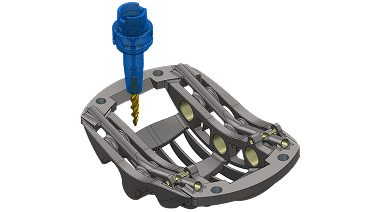
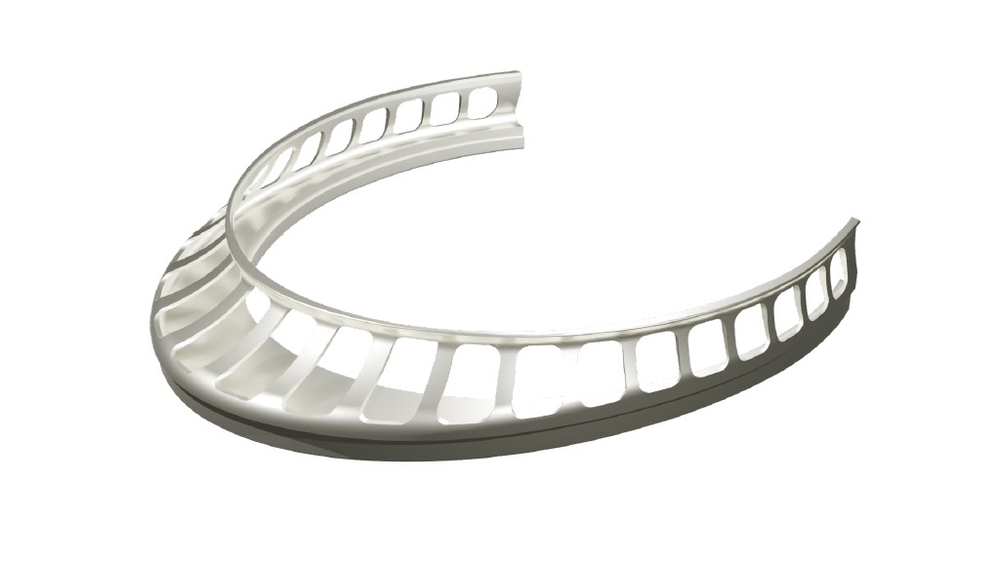

Mastercam 快问快答：从入门到装机全链路
整理一篇 Mastercam 的问答速查，覆盖软件定位、CAD 建模能力、版本节奏、线切割与多轴模块、系统要求与授权方式，读完知道要不要装、装完从哪下手。
整理一篇关于 Mastercam 的快问快答——如果你正在考虑上这套编程软件，或者车间刚换了新版本，以下七个问题应该能帮你把关键决策点捋清楚。
Mastercam 到底是什么？谁在用？
第一句给结论：它是一套走量的 CAM 编程软件，专门给数控机床生成刀路。铣、车、线切割、雕刻、多轴，只要你车间里有对应的机床，基本都能找到对应模块。
它的定位不是"设计软件"，而是"加工编程软件"——从零件模型进来，到输出机床能认的 G 代码，中间整条链路是它的地盘，mastercam官网上有完整的功能矩阵对照。主流客户画像很清晰：中小型精密加工厂、模具车间、航空航天零件供应商、职业院校的数控专业实验室。国内用户群集中在珠三角长三角的模具与五金加工厂。
自带一套 CAD 工具能做加工准备用的建模，但如果你要从消费级产品外观设计画起，应该用 SolidWorks 或 Rhino 先把模型做好，再导进来。

自带的 CAD 够不够用？要不要额外装一套 SolidWorks？
结论直接给：为加工服务的建模，完全够；做产品设计，别指望它。
内置的 CAD 基于 Parasolid 内核，三类几何都能画：线框（二维刀路轮廓、辅助线）、曲面（直纹、旋转、扫描、举升、网格曲面）、实体（拉伸、旋转、扫掠、抽壳、布尔运算、倒角圆角）。2026 版对举升曲面的混合算法做了增强，复杂雕塑曲面的过渡更平滑。
但真实车间的主流工作流不是"自己画模型"，而是"客户给 STEP 或 SolidWorks 模型 → 导入 → 修补 → 编程"。所以这里的 CAD 定位是模型准备工具，不是产品设计工具。什么时候该自己画：铣一个夹具、画毛坯、画压板虎钳用于仿真查碰撞；什么时候该导入：客户给了现成模型就别自己从零画一遍。
版本号怎么读？2026 和 2026.R2 什么关系？
Mastercam 从 2026 版开始把延续多年的年度大版本制改成了半年更节奏——每年两个大更新，春季的当年主版本（2026），秋季的当年半版本（2026.R2）。官方理由很实在：车间不想为验证提速、自动化这类能力等整整一年。
几个容易混淆的点拆开说：
- 2026.R2 不是小补丁。R2 带了 GPU 加速仿真、AI 助手 Copilot、多轴改进与 Blum 对刀仪支持，都是实打实的新功能。
- CONNECT 维护计划：订阅了的用户可以免费拿每个新版本。永久授权的软件本身可以一直用，但 CONNECT 到期后续费才能解锁新功能。
- 文件格式不向前兼容：新版文件旧版打不开，团队升级最好同步进行，别有人用 2025 有人用 2026。
- 语言包必须和主程序版本一致，2026.R2 程序不能搭配 2026 的旧语言包，自动更新服务会同步处理。
线切割模块有什么特别的？和普通铣削编程差别大吗？
线切割（Wire EDM）用通电的细金属丝放电蚀除材料，专门对付淬硬钢、硬质合金这类刀具切不动的材料，以及普通刀具难以到达的精细内腔。差别确实不小——普通铣削靠刀具切削，线切割靠放电，两者的刀路逻辑和工艺参数完全不同。
Wire 模块给慢走丝和中走丝机床编程，三个官方重点功能值得单独记，mastercam文档里有详细的参数表：
自动进退刀策略：丝的引入引出段影响切口起点质量，软件自动规划引入方式与位置，剪丝穿丝动作也编进程序里。
留料 tab：轮廓切到最后一小段不切断，留一个连接片把废芯固定住，加工完再手动掰断或二次切除。不固定的话废芯中途倒下会夹断丝。tab 功能可以在任意轮廓段快速加多个，灵活度很高。
无芯切割：挖空区域不掏整块废芯，走螺旋轨迹把材料碎切掉——大内腔不产生沉重废芯，穿丝次数也省了。
还有一个实用的：策略库。线切割的参数体系（丝径、功率、多次切割序列）每台机床一套配方，调好一套可以存成库，同规格零件换着切直接套用，不用重新调参。多次切割的具体刀数和余量分配依机床品牌和丝材定，以机床工艺手册为准。

多轴编程难不难？三轴程序员怎么转？
多轴编程的核心矛盾很简单：机床多出来的自由度既是机会也是风险——一次装夹干完复杂件，但刀轴管理不当就是撞机。好消息是门槛正在被自动化功能一点点拆低，坏消息是入门阶段依然需要对刀具姿态有清晰的空间想象力。
先搞清楚两类多轴刀路的差别：
定轴多轴（3+2 / 定位五轴）：刀轴转到固定角度后按三轴方式切削。安全、易学，把复杂件分成几个角度面分别加工。多数车间上多轴的第一步就是先跑定轴。
联动多轴（Simultaneous 5-axis）：刀轴在切削过程中连续变化。用于叶轮、整体叶盘、螺旋桨这类曲面与姿态必须联动配合的零件。
官方推荐的学习顺序很务实：先吃透三轴基本功（二维铣削、动态开粗），再练定轴 3+2 理解工作平面与刀轴的关系，然后从 Swarf 沿边五轴进入联动——几何简单（直壁面）、效果直观，最后攻曲面联动与专用刀路。
2026.R2 版本对多轴做了针对性升级：牛鼻刀自动倾斜碰撞控制（刀具选择更自由）、4 轴 Swarf 侧刃精铣的表面质量提升、安全平面计算优化让空行程更短。但多轴加工安全要求高，新程序务必完整走仿真验证再上机，这一点官方文档反复强调不是没道理的。
装 Mastercam 对电脑有什么要求？老电脑能跑吗？
先对照官方下载页的系统要求，按版本分清楚：
- Windows 11 推荐：2023 版起完整支持 Windows 11，当前版本（2026）推荐 Windows 11 64 位专业版（23H2 或更新）。
- Windows 10 还能撑到 2028：官方明确 Windows 10 的支持到 Mastercam 2028 版为止。
- Windows 7 / 8.1 已不支持：2022 是最后一个支持 Win7 的版本，别再折腾了。
2026.R2 带了 GPU 加速仿真，显卡越好仿真越流畅。如果只做二维铣削编程，普通商用机就能跑；如果要做五轴仿真验证，建议独显加 32GB 内存起步。
要不要付费？授权方式有几种？
核心分两种：订阅制的 CONNECT 维护计划和永久授权。订阅用户按期付费，持续拿新版本更新；永久授权一次性买断，软件本身可以一直用，但 CONNECT 到期后续费才能解锁后续新功能。具体报价依地区和模块组合定，建议联系当地官方经销商或合作伙伴询价。
最后给个短评：如果你车间里有数控机床、需要编程出刀路，Mastercam 是一套上手稳、覆盖全、行业接受度高的选择；如果你只是做设计画图，它不是干这个的——把它当加工编程工具用，别把它当 CAD 设计工具来买。
顺手说一句：这套资料我同步放在了三个仓库，方便不同网络环境下查阅——GitHub、Gitee、GitCode都有完整的文档目录，按需取用就行。